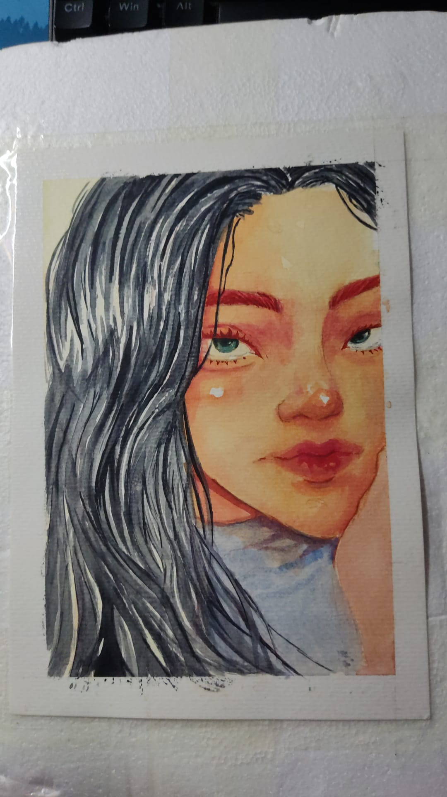
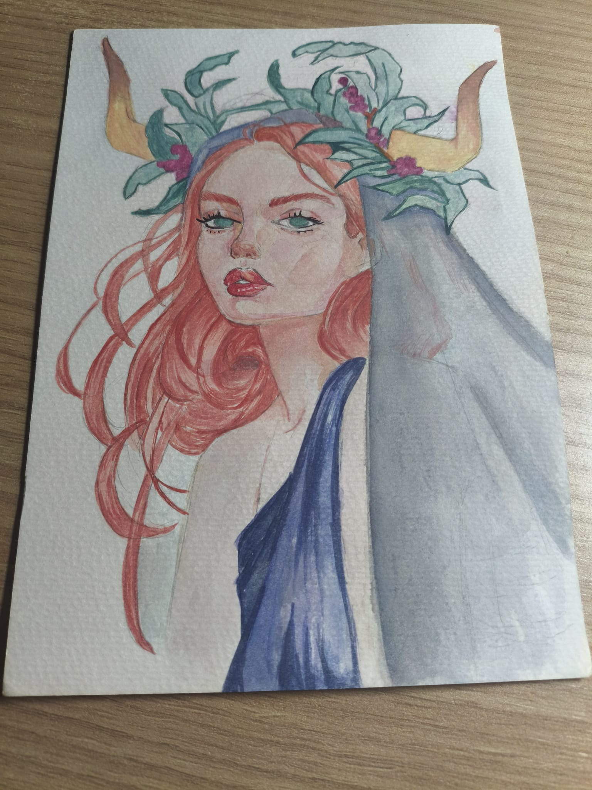

Practicas de pintura con aquarela
Ultimamente estoy haciendo mas dibujos con aquarelas, estoy bastante interesada en dibujar rostros.


Holaa, esta es una página web que estoy haciendo para entretenerme. Aquí publicaremos cositas que haga en mi dia a dia o que me interesen. Mi plan es que la página quede bonita.
Ultimamente estoy haciendo mas dibujos con aquarelas, estoy bastante interesada en dibujar rostros.


En esta imagen está recien adoptado, es un conejito toy, un toy mariposa azul.
 Ir a otros
Ir a otros